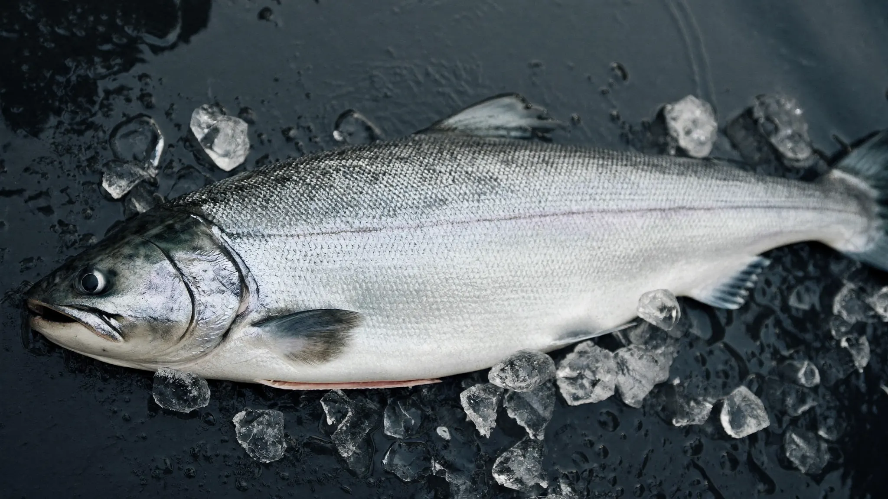
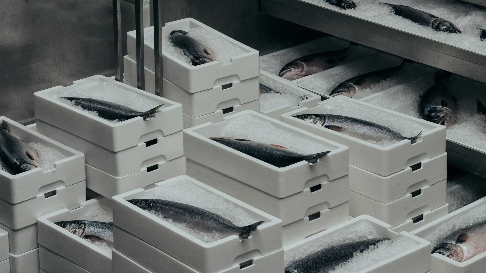
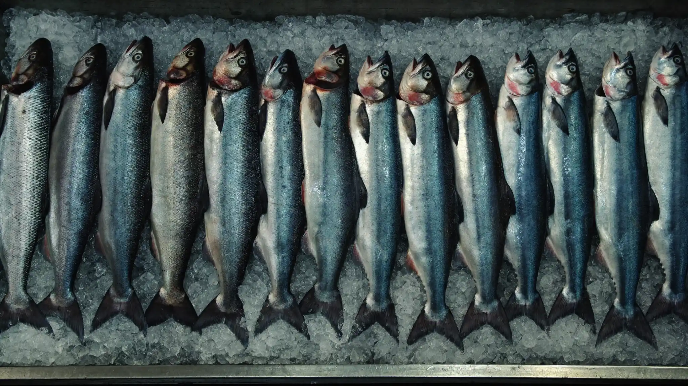

Building the Norway–India Seafood Bridge.
Connecting Norwegian Atlantic Salmon with Indian processors, distributors and importers through a dedicated value chain.
A Dedicated Value Chain.
We believe successful seafood businesses are built through relationships, not transactions.
- Sourcing Carefully selected Norwegian farming operations.
- Processing Modern facilities along the Norwegian coast.
- Cold chain Integrated, from harvest to delivery.
- Shipping Bulk export packaging and container shipments.
- India Supply for importers, processors and distributors.
Building for One Market. Building for the Long Term.
NorSeafood was established with a clear purpose: to create a dedicated seafood bridge between Norway and India.
Rather than spreading our focus across multiple export markets, we have chosen a different path. We believe lasting partnerships are built through commitment, local understanding and a long-term presence in a single market.
For us, that market is India.
India is one of the world's fastest-growing food markets, driven by rapid urbanisation, rising disposable incomes and increasing demand for premium international food products. As cold-chain infrastructure continues to develop and consumer expectations evolve, the opportunity for high-quality Norwegian seafood has never been stronger.
Through Norwegian Sustainable Seafood, we are building a value chain designed specifically for India, connecting Norwegian producers with Indian importers, processors and distributors through trusted partnerships, responsible sourcing and a shared ambition for sustainable growth.
We are not building a global seafood company.
We are building Norway's most dedicated seafood partnership with India.

Frozen Whole Atlantic Salmon
We supply premium frozen whole Atlantic salmon sourced from carefully selected Norwegian farming operations and processed in modern facilities along the Norwegian coast.
Our focus is simple: consistent quality, predictable supply and long-term commercial partnerships. Every shipment is handled through an integrated cold chain designed to preserve freshness, product integrity and traceability from harvest to delivery.
Available products
Our salmon is intended for importers, processors, distributors and food industry partners seeking a reliable supply of Norwegian raw material for further processing and distribution within the Indian market.
Whether supplying container volumes or supporting long-term sourcing programmes, our ambition is to become a dependable Norway-based partner for India's growing seafood industry.
- 01 Frozen Whole Atlantic Salmon
- 02 Head-on / Gutted (HOG)
- 03 Multiple size grades available
- 04 Bulk export packaging
- 05 Container shipments
- 06 India-focused supply
Why Partner With Us
Choosing a seafood supplier is about more than product availability. It is about consistency, traceability and the confidence that every shipment will meet the standards your business depends on.
NorSeafood was established to build a dedicated Norway–India seafood value chain, combining Norwegian sourcing expertise with long-term partnerships and a clear commitment to the Indian market.
We work with carefully selected production partners operating modern processing facilities that adhere to internationally recognised food safety and quality management standards. Depending on the production facility and product, this includes certifications such as Certified Kosher, FSSC 22000, GlobalG.A.P. and ASC, together with comprehensive quality assurance and full product traceability throughout the supply chain.
By combining trusted Norwegian sourcing with local market understanding, transparent communication and dependable logistics, our ambition is to become a long-term sourcing partner for Indian importers, processors and distributors seeking reliable access to premium Norwegian seafood.

Product specifications
- Product
- Frozen Whole Atlantic Salmon
- Origin
- Norway
- Species
- Atlantic Salmon (Salmo salar)
- Processing
- Head-on, gutted
- Packaging
- Export cartons
- Storage
- Frozen
- Traceability
- Full batch traceability
- Supply
- Container shipments
- Market
- India
Built Between Two Countries
Everything we do is guided by a simple belief:
The future belongs to companies willing to invest in relationships.
- Norway provides world-class seafood.
- India provides one of the world's most exciting growth opportunities.
NorSeafood exists to connect the two.
Let's Build Together
Looking for a Long-Term Seafood Partner?
Whether you are an importer, processor, distributor or food industry partner, we would welcome a conversation. We will support your demand for Norwegian salmon.